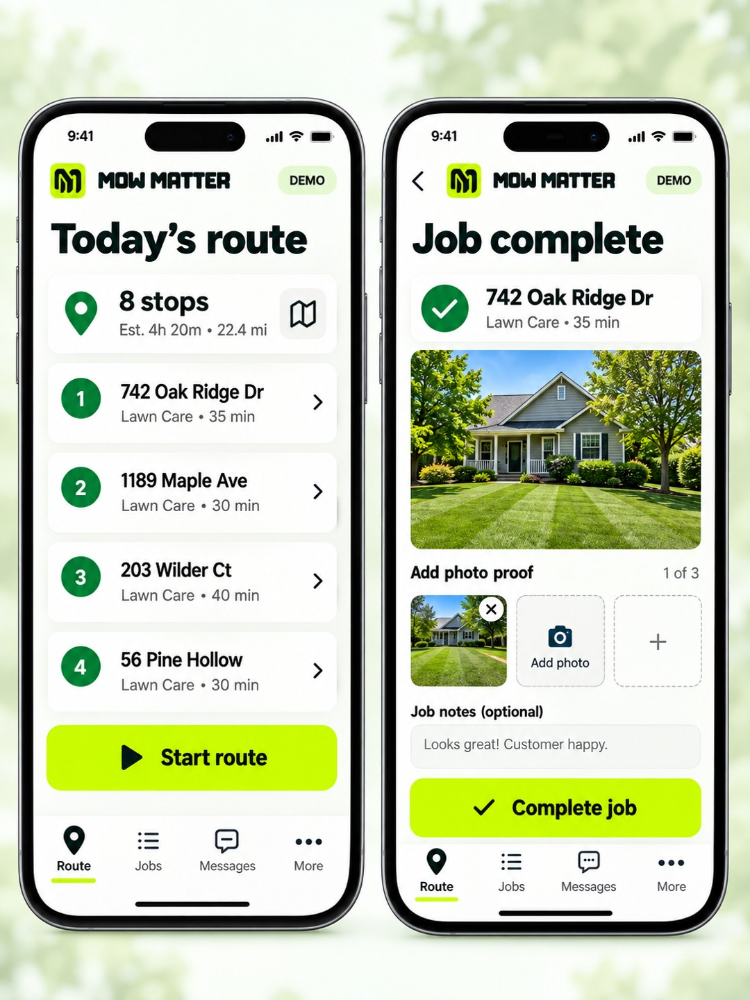

FOR THE OWNER. FOR THE CREW. FOR WHAT’S NEXT.
Your routes.
Your crews.
Your next chapter.
Bring customers, recurring work and day-to-day decisions into one lawn care operating platform—so the business you build gives you room to grow.
Platform in development. Business planning tools and early-access signup are available now.

HERE FOR YOUR OWN YARD?
Need your lawn cut?
You’re in the right place.
Find local lawn care or request mowing, edging, hedges and more.
Locate Lawn CareHERE TO GROW YOUR BUSINESS?
Build more than
a packed schedule.
Plan tighter routes, organize recurring work and give your crew a simpler day.
Explore the Growth LabONE PLATFORM. THREE CONNECTED EXPERIENCES.
Built around the people doing the work.
The management hub
Customers, routes, financials and AI activity in one workspace.
Explore the hubFOR CREWSThe mobile app
The next stop, job instructions and completion photos.
See the crew appFOR HOMEOWNERSYour yard, handled
Service requests today. Visits, messages and payments as the portal launches.
See the homeowner experienceLESS ADMIN AFTER A LONG DAY
Keep the office
and field connected.
Give crews the details they need and keep the owner in control of pricing, permissions and business decisions.
Explore the field experience